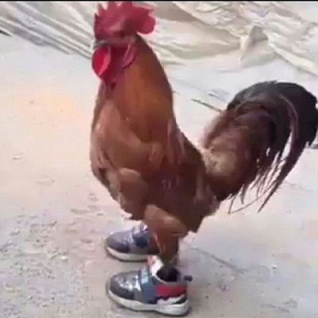
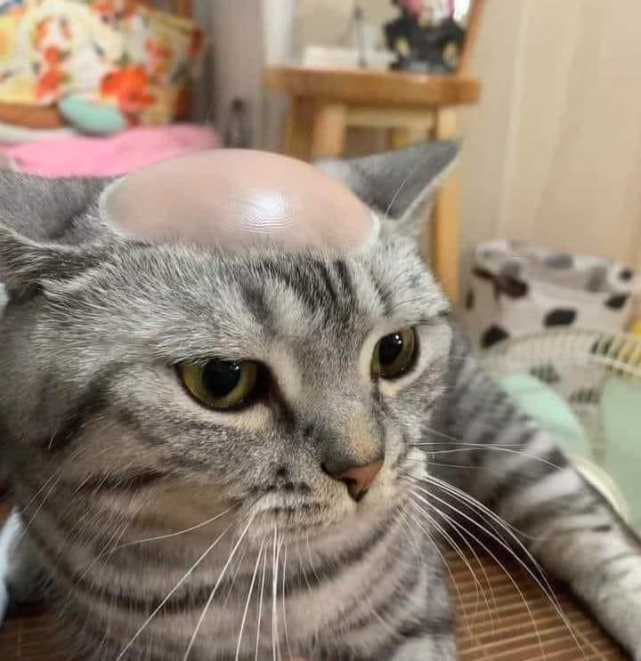
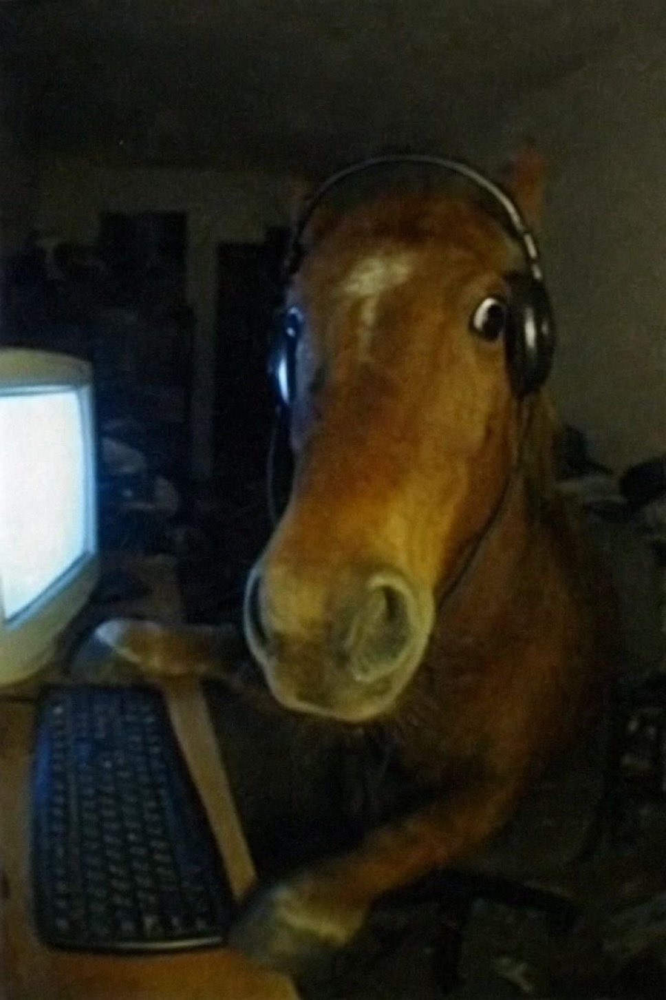
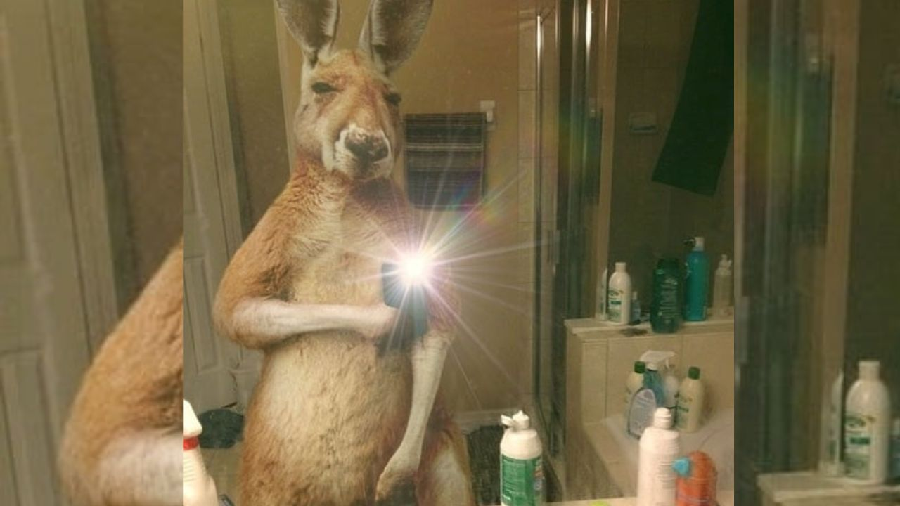
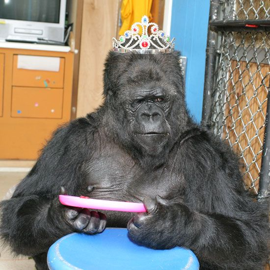

PUESTO 5
GALLO CON ZAPATOS DEPORTIVOS

copyright © 2025 henrycalles. todo los derechos reservados.
la imagen en cuestión muestra un gallo con unos zapatos deportivos cuyo origen es peruano, la persona que tomo la foto no tenía más que otra intención que hacer reír a las personas que vean la imagen con un pollos con zapatos de marca que se considera callejero
PUESTO 4
GATO RAPADO

copyright © 2025 Carlos Miguel. todo los derechos reservados.
está imagen del gato pelado fue un montaje hecho con Photoshop publicado en internet con el enunciado (un hombre en florida invade casa, afeita la cabeza del gato y se va sin robar nada) para luego de unos días se descubrió que esa imagen fue editada para que el gato parezca calvo
PUESTO 3
CABALLO JUGADOR DE PC

copyright © 2025 Javier Medina. todo los derechos reservados.
aquí esta otro montaje hecho por unos chicos estado unidences comprando una botarga de caballo con unos audífonos en frente a una pc para dar la ilusión de que un caballo estaba jugando algo poniendo le una cara bien chistosa
PUESTO 2
CANGURO SELFIE

copyright © 2025 Javier Medina. todo los derechos reservados.
ests imagen nos presenta un con canguro tomándose una selfie delante de un espejo está foto de creo con fines humorísticos Pero se hizo popular por qué hubo varias personas que se creyeron la imagen
PUESTO 1
GORILA DIZFRZADO DE REINA

copyright © 2025 Javier Gonzalez. todo los derechos reservados.
para cerrar el top aquí esta la imagen de un gorila con una corona de princesa viendo con cara de 🤨 imagen tomada en Australia solo para dar una imagen ridícula que junto a la cara del gorila lo vuelve cómica y el ganador de este puesto